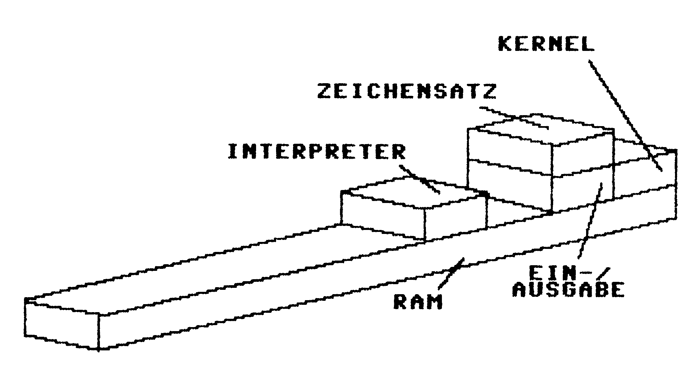
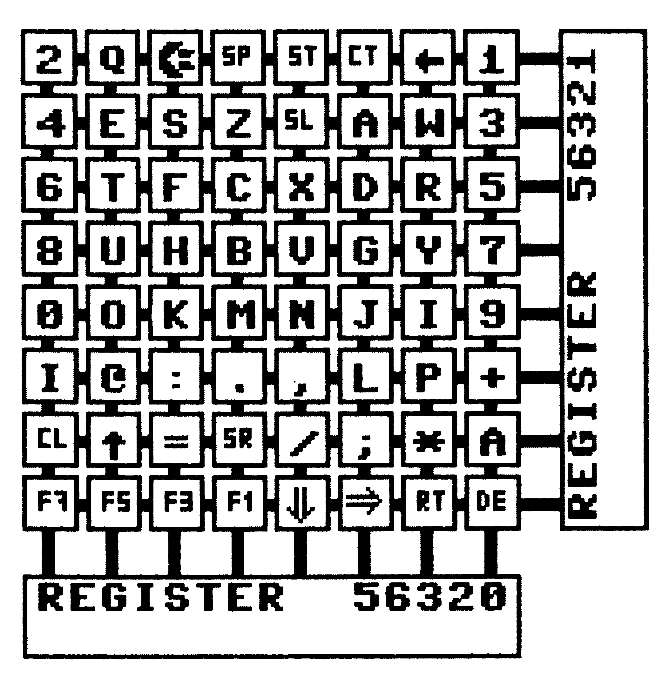
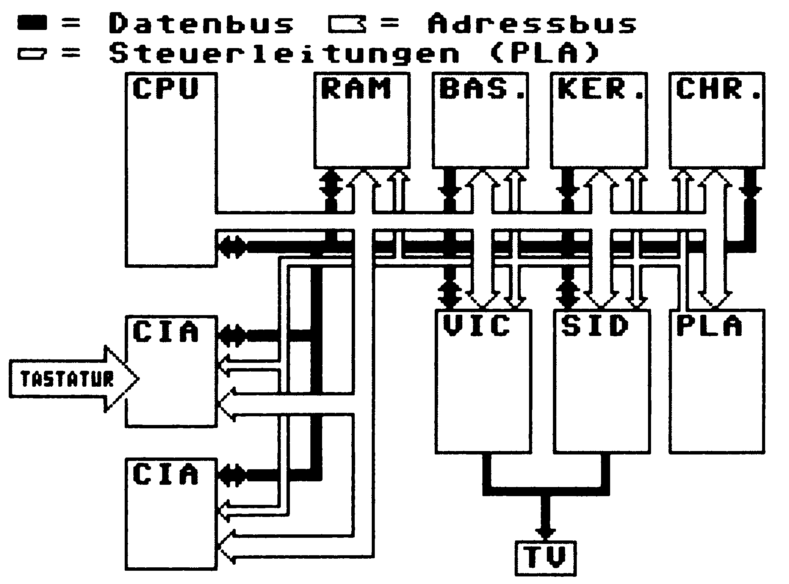

Wie funktioniert ein Computer?
Sicher haben Sie sich schon einmal gefragt, was sich so im Innersten eines Computers abspielt? Folgen Sie uns in die internen Schaltkreise und nehmen Sie an den Vorgängen im Computer teil.
Ein Computer ist ein für jedermann sehr nützliches Gerät. Sei es nun, um Adressen oder die Haushaltskasse zu verwalten, Texte und Briefe zu verarbeiten, sich mit Zeichenprogrammen künstlerisch zu betätigen oder einfach nur der Spielleidenschaft zu frönen.
In der heutigen Zeit gehört der Computer fast schon zum normalen Alltagsleben. Viele Menschen haben inzwischen gelernt, mit dem Computer zu arbeiten und umzugehen. Sei es nun im Berufs- oder im Privatleben. Die Angst vor dem unbekannten Medium Computer schwindet.
Man lernt eben schnell »computern«. Einfache und leicht zu erlernende Programmiersprachen wie Basic oder Pascal schaffen in kurzer Zeit die Möglichkeit, sich selbst seine individuellen Programme, die auf den eigenen Bedarf abgestimmt sind, zu erstellen.
Doch obwohl der Umgang mit dem Computer kein Buch mit sieben Siegeln mehr ist, so sind die inneren Abläufe im Computer wohl für die meisten Anwender ein ungelöstes Rätsel. Fragen wie zum Beispiel »Was steckt denn alles drin in der Kiste?«, »Wozu sind die kleinen schwarzen Käfer, von den Fachleuten auch als ICs (integrierte Schaltungen) bezeichnet, denn nun da und welche Funktion erfüllen sie?« oder »Wo stecken die kleinen Zeichen, die ich nach Eingabe auf dem Bildschirm sehe?« bewegen irgendwann einmal jeden Anwender, dessen Interesse für sein Gerät geweckt wurde.
Dieser Artikel nimmt Ihnen die Ungewißheit und die ungeklärten Fragen, wie so ein Computersystem arbeitet. Sie erhalten Informationen über das Zusammenspiel (wir wollen es nicht gleich Zusammenleben nennen) der einzelnen Komponenten und Schaltkreise des Computers. Da die 64'er eine Zeitschrift über den Commodore C 64 ist, wird zweckmäßigerweise speziell auf diesen weitverbreiteten Computer eingegangen. In der Computerzeit-Sendung, die am 8. August 1986 von der ARD ausgestrahlt wurde, konnten Sie die Erklärung eines Computersystems sehr anschaulich am Beispiel des Amiga sehen.
Es ist natürlich immer interessanter, am Objekt nachzusehen, wo das besprochene Bauteil sitzt und wie es aussieht (ein natürlicher Forschungsdrang). Dazu wäre es von Vorteil, das Gerät offen neben sich liegen zu haben. Um Ihnen aber das Aufschrauben des C 64 und den Verlust vorhandener Garantieansprüche zu ersparen, haben wir für Sie einen C 64 aufgeschraubt und zerlegt. Sie finden dieses aufschlußreiche Foto, auf dem Sie die Lage der einzelnen Bauteile sehr gut erkennen können, in dieser Ausgabe auf Seite 130. Anhand der Bildunterschriften und Markierungen auf dem Foto können Sie so schnell die Bauteile lokalisieren.
Nach dieser Einleitung steigen wir auch schon voll ein. Wir erläutern Ihnen zuerst die Funktion der einzelnen Baugruppen des Computers und geben Ihnen später einen schematischen Aufbau der Wirkungsweise und des Zusammenspiels des Systems. Dieses läßt sich übrigens prinzipiell auf jedes Computersystem übertragen, da die logische Funktion im Grundprinzip immer identisch ist.
Sinn und Zweck der einzelnen Komponenten
In unserem Computer existiert eine Vielzahl verschiedener elektronischer »Käfer«, Leitungen und Kontakte (siehe auch Foto auf Seite 130). Auch hört man viel über spezielle Baugruppen wie zum Beispiel RAM, VIC, CPU oder andere. Hier erfahren Sie in einer Art Lexikon die Bedeutung der verschiedenen Komponenten. Ein vorangestellter Pfeil (→) zeigt an, daß der Ausdruck an anderer Stelle ausführlich erklärt ist. Eine Zahl in einer Klammer (XX) deutet auf die Bauteilposition hin, die Sie dem Bild auf Seite 130 entnehmen können.
Adresse — Der Speicher des C 64 umfaßt 64 KByte. Man kann sich das als eine lange Straße mit 65536 Hausnummern vorstellen. Jedes Haus (Byte) hat eine eigene Adresse und kann somit adressiert (angesprochen) werden. Man sagt auch, der C 64 verfügt über einen Adreßbereich von 64 KByte.
Adreßbus — Eine der wichtigsten Leitungen im Computer. Der →Prozessor legt eine bestimmte →Adresse auf den Adreßbus, der damit aus dem vorhandenen →RAM oder →ROM eine Adresse gezielt auswählt, so daß sich dieses Byte angesprochen fühlt. Um nun den vollen Speicherumfang von 64 KByte ansprechen zu können, verfügt der Adreßbus über 16 einzeln ansteuerbare Leitungen (2 ↑ 16 = 65536 verschiedene Adressen = 64 KByte).
Arbeitsspeicher — Siehe RAM
Basic-ROM (Interpreter-ROM) (4) — In diesem Baustein ist der Basic-Interpreter dauerhaft untergebracht. Der Interpreter hat die Aufgabe, Befehle, die der Benutzer in einer für ihn einfachen Weise eingibt, auf eine computerverwertbare Form zu bringen. Da der Prozessor leider nur Maschinensprache versteht, kann er mit Befehlen wie PRINT oder RUN nichts anfangen. Der Interpreter (Übersetzer) wandelt also diese »höheren« Befehle in niederen, prozessornahen Maschinencode.
Bit — Ein Bit ist die kleinste Informationseinheit, die im Computer anzutreffen ist. Es kann nur den Zustand »0« oder »l« annehmen. Damit läßt sich aber nicht allzuviel anfangen. Deshalb sind moderne Computer mit mindestens 8 Bit konstruiert. Das heißt, sie arbeiten nicht mehr mit Bits, sondern gleich mit Bytes. (8 Bit bezeichnet man als ein Byte.) Ein Byte kann bereits 256 verschiedene Werte annehmen. Oder anders ausgedrückt: Mit einem Byte lassen sich 256 verschiedene Zeichen darstellen. Ein Byte ist aber noch kein Speicher. Dazu braucht man schon etwas mehr »Bewegungsfreiheit«. Einige tausend Byte sind da schon besser. Man spricht dabei von KByte (Kilo-Byte). Ein KByte umfaßt 1024 Byte. Der C 64 ist in der Lage, 64 KByte, also 65536 Byte oder 524288 Bit, zu verwalten und auszunutzen.
Betriebssystem — Siehe Kernel-ROM
CIA (1, 2) — (= Complex Interface Adapter = Ein/Ausgabe-Baustein). Der Computer ist ein sinnloses Werkzeug, wenn die Daten nicht ein- und wieder ausgegeben werden können. Die CIAs sind die Schnittstellen, die erst die Verbindung zur Außenwelt ermöglichen. Da wäre die Tastatur, deren Eingaben über die CIAs an die Computerinnereien übergeben werden. Oder Daten, die von Diskette oder Datasette, Lightpen, Joystick oder User-Port eingehen. Alles dies läuft erst über die CIAs, die die Daten auf für den Computer verwertbare Form bringen. Ein System wäre ohne diese Bausteine völlig blind und taub.
Datenbus — Über den Datenbus können Bytes, die vorher durch den →Adreßbus angewählt wurden, gelesen oder geschrieben werden. Dieser Bus ist acht Leitungen breit, er kann also ein Byte →parallel übertragen.
Datenträger — Da Daten nach dem Ausschalten des Computers verlorengehen, ist es nötig, diese irgendwie zu sichern. Dazu dienen externe Datenträger. In der einfachsten Form wäre so ein Datenträger ein Stück Papier. Dies genügt aber unserem Computer nicht, er benötigt magnetische Datenträger (zum Beispiel die Diskette oder die Kassette).
EPROM — EPROMs sind ebenfalls ein Speichermedium. Sie besitzen die Form von ICs (integrierten Schaltungen). In besagte EPROMs können Daten dauerhaft gesichert (»gebrannt«) werden, fungieren also wie ein ROM. Der Vorteil besteht darin, daß diese EPROMs wieder gelöscht und neu beschrieben werden können. Im Computer finden diese Bausteine Verwendung, wenn jemand sein →Betriebssystem oder seinen →Zeichensatz auf Dauer ändern will.
Expansion-Port (13) — Ein großes Plus des C 64 ist der Expansion-Port. Hier sind alle wichtigen Leitungen des Computersystems für den Anwender frei zugänglich. So können bestimmte Signale abgegriffen, beeinflußt oder zur externen Steuerung hergenommen werden. Die übliche Anwendung ist das Einstecken von →Erweiterungsmodulen (zum Beispiel Spielemodule).
Hardware — Alle Teile eines Computersystems, die Sie mit den Fingern anfassen können, aber nicht unbedingt sollten (Bausteine, Drähte oder Platinen).
Hardwaremäßig — Dieser Ausdruck bedeutet, daß verschiede Operationen oder Tätigkeiten den einzelnen Bausteinen vom Werk her fest, also nicht veränderbar, eingebaut wurden.
Interrupt — Eine für das System sehr wichtige Tätigkeit. Der Interrupt unterbricht etwa jede 60stel Sekunde ein momentan laufendes Programm und verzweigt in die, im ROM stehende, Interrupt-Routine. Dieser kleine Programmteil des Betriebssystems sorgt dafür, daß die Tastatur und die Joystick-Anschlüsse abgefragt sowie die interne Uhr des Computers weitergestellt wird. Es ist auch möglich, eigene Routinen in den Interrupt einzubinden, die dann spezielle Signale, unabhängig vom gerade laufenden Programm, abfragen oder auslösen. Typische Anwendungen dafür wären zum Beispiel Musikstücke, die unabhängig von laufenden Spielen den Sound-Chip »zum Klingen bringen«.
Kernel-ROM (5) — Der »Intellekt« des Computers. Im Kernel (eine geläufigere Bezeichnung ist Betriebssystem) sind alle Daten dauerhaft gespeichert, die der Computer benötigt, um sein System am Leben zu erhalten. Das Betriebssystem hilft uns auch sehr beim Umgang mit dem Computer. Es nimmt dem Anwender die meiste Arbeit ab. So braucht er sich nicht darum zu kümmern, wie die Zeichen auf den Bildschirm oder die Daten von →Peripheriegeräten in den Speicher kommen. Der Benutzer gibt einfach einen Befehl ein und das Betriebssystem kümmert sich um alles weitere. So kann der Anwender entlastet werden, da er sich nur auf wichtige Dinge konzentrieren muß, die der Steuerung und Programmierung dienen.
Modul — Der übliche Weg, ein ablauffähiges Programm in den Computer einzugeben, ist entweder, es von einem externen →Datenträger (Diskette, Kassette) zu laden oder es über die Tastatur einzutippen. Es besteht aber auch die Möglichkeit, Programme fest in ein →EPROM zu brennen und dieses dem →Adreßbereich zugänglich zu machen. Der Computer behandelt das EPROM, als wäre es ein in seinem internen Speicher abgelegtes Programm. Ein Modul wird beim C 64 einfach in den Expansion-Port eingesteckt (Spiel-, Sprachen- oder Erweiterungsmodule).
Parallele Übertragung — Der C 64 verfügt intern über einen →Datenbus von 8 Bit (= 1 Byte) Breite. Somit kann ein Byte auf einmal (parallel) übertragen werden. Diese Art der Datenübertragung bedeutet eine schnelle Beförderung der Daten. Die langsamere Art wäre die →serielle Datenübertragung.
Peripherie — Hierunter versteht man Geräte aller Art, die extern, also von außen, an den Computer angeschlossen werden. Mögliche Geräte wären zum Beispiel Diskettenlaufwerke, Drucker, Joysticks oder auch der Bildschirm. In anderen Geräten (zum Beispiel Personal Computern) zählen sogar die Tastaturen als periphere Geräte, da sie teilweise sogar mit eigenen Prozessoren ausgerüstet sind und sich von außen an den Computer anschließen lassen.
PLA (10) — (Program Logic Array = eingedeutscht etwa: Speicherebenenverwalter). Der Prozessor 6502/6510 kann »nur« 64 KByte Speicher verwalten. Der C 64 besitzt aber 20 KByte mehr Speicher. Diese 20 KByte sind aufgeteilt in 8 KByte →Interpreter, 8 KByte →Kernel und 4 KByte →Zeichensatz. Um diese insgesamt 84 KByte trotzdem mit dem Prozessor adressieren zu können, griffen die Entwickler zu einem Trick: Sie legten die RAM- und ROM-Bereiche »übereinander« und blendeten nur immer die gerade benötigten Speicherbereiche in den Adreßbereich der CPU ein. Dieses Anwählen gerade benötigter Speicherbereiche, das auch als »Bank-Switching« bezeichnet wird, ist die Aufgabe des PLA. (Siehe auch Bild 2 über den Speicheraufbau des C 64.)

Pointer (Zeiger) — Wenn ein Programm abläuft, das mit Variablen oder Texten arbeitet, muß es diese irgendwo zwischenspeichern. Diese Daten liegen, je nach Bestimmung des Anwenders, irgendwo im →Arbeitsspeicher. Die Pointer deuten auf die Anfänge oder die Enden dieser Felder, sind also unerläßlich, will man seine Daten im Speicher wiederfinden.
Portbaustein — Siehe CIA.
Prozessor (CPU = Central Processing Unit« =Zentraleinheit, Mikroprozessor) (8) — Das »Gehirn« des Computers. Hier werden alle logischen Operationen und Rechnungen ausgeführt. Ein Großteil aller Speicheroperationen (verschieben, kopieren) läuft über spezielle →Register der CPU. Sie ist der treibende Faktor des ganzen Systems. Anhand von im →Speicher stehenden Befehlen und Anweisungen entscheidet die CPU, welcher Baustein welche Operation ausführen soll.
Quartz (18) — Damit das System zur Zufriedenheit arbeitet, ist es Voraussetzung, daß die einzelnen Komponenten ihre Operationen in einer bestimmten Reihenfolge ausführen. Das System würde völlig aus dem Häuschen geraten, wenn Baustein l die →Datenleitung freigibt, während Baustein 2 noch darauf zugreifen will. Deshalb sorgt ein Systemtakt dafür, daß alle Bausteine einem einheitlichen Rhythmus unterworfen sind. Innerhalb der Bausteine ist genau festgelegt, welche Operation innerhalb welchem Taktzyklus ablaufen darf. Die PAL-Version des C 64 arbeitet mit 0,98 MHz. Dies bedeutet 980000 Takte je Sekunde. Diese Frequenz ist aber für einen Computer der heutigen Generationen wenig. So arbeiten Personal Computer mit 4,7 MHz, der neue Amiga verkraftet sogar um die 8 MHz.
RAM (24) — (Random Access Memory = Speicher mit wahlfreiem Zugriff = Schreib-/Lese-Speicher). Der C 64 enthält 64 KByte RAM. Dies sind 65536 Byte oder, im umschriebenen Sinn, 65536 Zeichen, die im Speicher abgelegt werden können. Der RAM-Speicher erlaubt es, Daten hineinzuschreiben und auch wieder auszulesen (dies erfolgt durch ein Read/Write-Signal, also Schreiben oder Lesen). Die Daten sind veränderbar. Gewissermaßen ist dies das Gedächtnis des Computers, da er ohne diesen Speicher und die darin enthaltenen Werte keine für den Anwender vernünftige Tätigkeit ausführen oder Daten verarbeiten kann.
Register — Verschiedene Bausteine (→VIC, →SID) müssen wissen, was das Programm von ihnen verlangt. Dazu sind bestimmte Speicherbereiche als Übergabe-Bereiche reserviert. Aus diesen Bereichen holt sich der betreffende Baustein regelmäßig die Informationen, die er benötigt. Diese Bereiche liegen im →RAM, da sie veränderbar sein müssen.
Es gibt noch eine weitere Art der Register: die Prozessorregister. Die CPU verfügt intern über einige Byte RAM, die dazu dienen, verschiedene Werte zwischenzuspeichern. Dies sind zum Beispiel aktuelle Rechenergebnisse, der Programmzähler, der auf eine bestimmte Adresse im Speicher deutet oder auch nur Hilfszähler.
Reset — Der Reset hat eine wichtige Funktion in unserem Computer. Er sorgt dafür, daß alle wichtigen Baugruppen des Systems wieder auf definierte Werte gesetzt werden. Dazu arbeitet das System ein fest im →ROM gespeichertes Programm, die Reset-Routine, ab und setzt nach deren Anweisungen die verschiedenen Komponenten auf in Tabellen definierte Werte. Ein Reset kann zum Beispiel bei einem Systemabsturz (der Prozessor erhält undefinierbare Befehle und »steigt aus«) den Arbeitszustand wieder herstellen.
ROM (4, 5 und 6) — Ein Computer ist von sich aus unintelligent. Es muß ihm erst gesagt werden, was zu tun ist. Dazu stehen ihm fest vom Werk aus →hardwaremäßig vorgegebene Programme zur Verfügung. Diese sind in ROMs (»Read only Memory« = Nur-Lese-Speicher) dauerhaft gespeichert. Im C 64 gibt es drei ROMs: das →Interpreter-ROM, das →Kernel-ROM und den →Zeichensatz. Diese auch als →Betriebssystem bezeichneten Bausteine sorgen dafür, daß der Computer überhaupt mit dem Benutzer Verbindung aufnehmen und von ihm Anweisungen erhalten kann.
Serielle Datenübertragung — Bei dieser Art der Datenübermittlung, die beim C 64 am seriellen Port zu finden ist, steht für die Daten nur eine einzige Datenleitung zur Verfügung. Ein einzelnes Byte muß also Bit für Bit über diese Leitung geschickt werden. Dies kostet Zeit. Darum benutzt man innerhalb des Computers die schnelle →parallele Datenübertragung.
SID (20) — (= »Sound Interface Device« = Musik-Chip). Er erzeugt alle Töne, die Sie vom C 64 hören. In ihm ist ein kompletter Synthesizer enthalten.
Speicher — Siehe RAM, ROM und PLA.
Tastaturdecoder — Um Leitungen zu sparen (es wären derer 67 nötig), sind die Eingabetasten über eine Tastaturmatrix (siehe auch Bild 1) codiert. Der Decoder schlüsselt die ankommenden Signale wieder in eine für den Computer verständliche Form auf.
Timer (25) — Würden alle Bauteile schlagartig mit Strom versorgt, so kämen mit Sicherheit alle Komponenten durcheinander, da lauter undefinierte Werte an und in den Bausteinen anliegen dürften. Deshalb blockiert der Timer für eine bestimmte, →hardwaremäßig voreingestellte Zeit die →Reset-Leitung und läßt erst nach Aufbau und Stabilisierung der Spannung die für den Systemstart wichtigen Operationen zu.
User-Port (3) — Der User-Port dient ebenfalls wie zum Beispiel der serielle Port der Ansteuerung von peripheren Geräten. Hier können auch, über entsprechende Hardware, elektrische Geräte oder Steuerungsanlagen betrieben werden. Diese lassen sich von einem Programm aus ansprechen. Der User-Port kann aber auch als Eingabegerät geschaltet werden. So lassen sich zum Beispiel Werte von außen aufnehmen und durch ein Programm analysieren.
VIC (19) — (Video Interface Controller = Videoprozessor). Keine Bildschirmausgabe auf Fernseher oder Monitor wäre möglich, gäbe es nicht diesen Baustein. Er sorgt dafür, daß die Zeichen, die im Bildschirmspeicher (ein Teil des RAMs) stehen, in richtiger Weise interpretiert und nach dem Auslesen aus dem Zeichensatz-ROM (6) auf dem Bildschirm erscheinen.
Zeichensatz-ROM (6) — In diesem Baustein sind die Muster der Zeichen gespeichert, die später auf dem Bildschirm erscheinen. Durch Verändern dieser Muster und programmieren in ein EPROM können auf Dauer die Zeichen geändert werden.
Zeropage/erweiterte Zeropage — In diesem Speicherbereich (die ersten 820 Adressen des RAM-Speichers) legt der Prozessor und das Betriebssystem Daten ab, die es immer griffbereit zur Hand haben muß.
Dies war eine Übersicht über die wichtigsten Baugruppen, Leitungen und Prozesse im C 64. Wir erklären Ihnen nun die Abläufe des Computers, wie er die von ihm gewünschten Funktionen ausführt und welche Baugruppen jeweils benötigt werden. Die Angabe »Position« bezieht sich auf die Nummern im eingangs schon erwähnten Foto (Seite 130). Anhand dieser Nummer können Sie das Bauteil auf dem Foto wiederfinden.
Beginnen wir mit dem ersten Schritt im Leben des Computers: dem Einschalten. Was passiert?
Zuerst werden schlagartig alle Bausteine im Computer mit Strom versorgt. Allerdings kann das System nicht sofort starten, da ein spezielles Signal die Zentraleinheit (CPU, Position 8) noch für kurze Zeit »lähmt«. Dieses Signal (logisch »0«) liegt am RESET-Eingang des Mikroprozessors an.
Zu diesem Zeitpunkt wird ein spezieller Timer-Baustein (Position 25) in Gang gesetzt, der besagte Reset-Leitung kontrolliert. Er wartet, bis sich die Betriebsspannung vollständig aufgebaut und stabilisiert hat. Erst nach Ablauf einer hardwaremäßig vorgegebenen Zeitspanne gibt der Timer den Prozessor frei, der bis dahin nicht eine einzige Tätigkeit verrichtet hat.
Doch jetzt steht er vor einem Problem: Was soll er tun? Noch hat er keinerlei Befehle erhalten. Dazu ist aber in seinem Gedächtnis ein fester Ausweg »eingebrannt«. Sobald der Prozessor belebt wird (nach Ablauf des Reset), sagt ihm eine innere Eingebung: »Springe an eine bestimmte Stelle innerhalb deines Computersystems und sieh nach, was du dort findest!« Diese Stelle ist die Adresse $FFFC (65532). Dahin springt der Prozessor 6502/6510 immer, egal, in welchem Computer er eingebaut ist.
Nach dem Einschalten liegt an dieser Adresse im C 64 das im ROM verankerte Betriebssystem (Position 5). Dieses Nachsehen erfolgt (nach Anwahl der Adresse über den Adreßbus) über den Datenbus. (Dieser Bus verbindet alle wichtigen Bausteine des Computers miteinander.) Im Kernel stehen fest gespeicherte, also nicht veränderbare Daten. Durch diese Systemdaten wird der Prozessor erst befähigt, bestimmte Aufgaben zu übernehmen.
Über die Adresse $FFFC springt der Prozessor zur Reset-Routine (64738). Dies ist ebenfalls ein fest im ROM verankerter Programmteil, der den Prozessor veranlaßt, folgende Tätigkeiten auszuführen:
Verschiedene Register, Pointer und Vektoren (Zeiger) werden auf definierte Werte gebracht. Danach prüft die CPU auf ein möglicherweise vorhandenes Modul im Expansions-Port. (Nehmen wir an, er findet keines.) Es folgt das Schreiben (Initialisieren) von bestimmten Werten in die beiden Portbausteine (Position 1 und 2), den Video-Chip (Position 19) und den Sound-Chip (Position 20).
Die jetzt folgende Tätigkeit (Testen der 64 KByte RAM, Position 24) benötigt den größten Teil der Zeit, die zwischen Einschalten des Computers und dem Erscheinen des Monitorbildes vergeht. Abschließend kopiert die CPU noch einige wichtige Werte und Tabellen vom ROM in das RAM. Dies ist nötig, da der Prozessor viel mit bestimmten Werten hantieren muß. Da er diese aber auch bestimmten Situationen durch Ändern bestimmter Parameter anpassen muß, ist es erforderlich, selbige veränderbar im RAM verfügbar zu haben.
Ist dies alles erledigt, erhält der Video-Controller die Anweisung, den Bildschirm zu löschen und der Prozessor springt an den Basic-Warmstart, der Adresse $A000 (40960). (Hier beginnt der ROM-Bereich des für uns wichtigen Basic-Interpreters.) Das System befindet sich in der Interpreterschleife, es ist bereit, unsere Anweisungen anzunehmen. Dies ist daran erkennbar, daß der Bildschirm leuchtet, die Einschaltmeldung erscheint, der Cursor blinkt und die Tastatur Eingaben von uns annimmt.
Dornröschen ist erwacht...
Der Computer ist zum Leben erwacht, er ist bereit, unsere Anweisungen entgegenzunehmen und auszuführen. Jetzt wird's richtig interessant (Die internen Abläufe während des Einschaltens hatten ja nichts mit unserer Tätigkeit zu tun).
Erforschen wir nun die Vorgänge, die im System bei unseren Wünschen vorgehen.
Was passiert, wenn Sie über die Tastatur ein Zeichen eingeben, bis zu dem Punkt, an dem es auf dem Bildschirm erscheint?
Jede Taste auf unserer Tastatur ist gewissermaßen ein Schalter. Bei jedem Druck schließt sich ein Kontakt, ein Stromimpuls auf einer bestimmten, der Taste zugeordneten Leitung ist die Folge. Der C 64 besitzt 66 Multifunktionstasten, die wie eine Schreibmaschinentastatur angeordnet sind (von dem separat stehenden Funktionstastenblock und den Spezialtasten <CTRL>, <CBM>, <RUN/STOP>, <CLR/HOME>, <RESTORE> und <CRSR UP DOWN> einmal abgesehen). Hier beginnt bereits das erste Problem für den Computer: 66 Tasten würden 66 Leitungen plus eine gemeinsame Minus-Leitung, also 67 Kabel benötigen. Dies wäre aber ein unhandlicher Kabelstrang.
Um dieses Manko zu umgehen, beschlossen findige Entwickler, die Anzahl der Leitungen mittels einer Tastaturmatrix einzuschränken (Den Aufbau einer solchen Matrix können Sie aus Bild 1 ersehen). Somit konnte die Zahl der benötigten Kabel auf 19 verkleinert werden.

Die Signale der Tasten gelangen nun über den »Complex Interface Adapter« (CIA 1, Position 1) an die Tastaturdecoder, die die ankommenden Signale wieder in die Einzelsignale auftrennen. Die Logik des Betriebssystems prüft nun, ob die Zeichen normal (ohne Kombination mit den Spezialtasten) oder in Verbindung mit der <SHIFT>-, <CONTROL>- oder <CBM>-Taste eingegeben wurden. Dabei ist jeder Tastenkombination ein Zahlenwert zugeordnet.
Das Betriebssystem sucht nun in einer, im Zeichensatz-ROM (Position 6) verankerten Tabelle nach dem Muster des Zeichens. Dieses Muster wird nun aus dem Zeichensatz-ROM in den Bildschirmspeicher übertragen, der sich bei normaler Einstellung von Adresse 1024 bis 2023 im RAM befindet. Der Videoprozessor (VIC) sorgt schließlich dafür, daß der Inhalt des Bildschirmspeichers auch auf dem Bildschirm erscheint. Ganz schön viel Arbeit, die getan werden muß, um nur ein einziges Zeichen sichtbar zu machen.
Ein anderer interessanter Ablauf ist das Lesen von Daten zum Beispiel von der Diskette. Hier muß das Betriebssystem auch einiges leisten.
Nach dem obligatorischen Erkennen und Analysieren des Befehls (Aufgabe des Interpreters und Betriebssystems) ergeht eine Order an den zuständigen Portbaustein: »Öffne einen Kanal zu dem Peripheriegerät Floppystation und bereite ein Datenlesen vor!« Dies zieht ein Setzen verschiedenster Register nach sich. Außerdem muß erkannt werden, ob es sich um Programme (PRG) oder andere Daten (SEQ, REL) handelt. Sind es nun letztere, so sucht sich das Betriebssystem anhand bestimmter Pointer (Zeiger) das Ende der derzeit im Speicher existierenden Variablen, Strings und Arrays, um an diese gefundene Adresse die einkommenden Daten abzulegen. Diese haben einen langen Weg hinter sich: zuerst über den externen Bus und von dort über die Portbausteine. Selbige geben die Daten über den Datenbus an den Prozessor weiter. Der Prozessor weiß natürlich inzwischen längst, wo noch Platz ist und richtet den Adreßbus entsprechend danach ein, das heißt »selektiert« eine bestimmte Adresse. Das Byte wird über den Datenbus in das zum Schreiben geöffnete RAM geschickt und dort abgelegt. Bevor nun das nächste Byte geholt werden kann, müssen noch die Pointer den neuen Gegebenheiten angepaßt, auf Platz im Speicher kontrolliert und der Portbaustein auf weiteres Lesen vorbereitet werden. Zwischendurch bremst der Interrupt, der die Tastatur abfragt, das Handeln des Systems. Da müssen Registerinhalte gerettet und nach Ablauf des Interrupts wiederhergestellt werden. Ist der Vorgang des Datenlesens beendet, ergeht ein Befehl an die Portbausteine und das Peripheriegerät, die offenen Kanäle zu schließen und der Prozessor geht wieder in den programmbedingten Systemablauf zurück. Stellen Sie sich nur vor, das müßten Sie für jedes einzulesende Byte selbst nachvollziehen. Also eine immense Arbeit, die uns das Betriebssystem abnimmt.
Oder: Sie geben einen Befehl über die Tastatur ein (der Prozeß der Zeichendarstellung wurde ja schon weiter oben beschrieben). Was fängt das System nun mit diesem Befehl an?
Ist die Eingabe nun mit einem <RETURN> abgeschlossen worden, transferiert (überträgt) das Betriebssystem die eingegebene Zeile (Befehl) in die erweiterte Zeropage ab Adresse $200 (512) im RAM (Position 24) und prüft auf Direktmodus oder Programmzeile. Im Falle einer Programmzeile sortiert das Betriebssystem nun besagte Zeile in den Speicher ein. Das bedeutet immense Verschiebe- und Rechenvorgänge, da der Speicher komplett neu organisiert werden muß.
Sollte es ein Befehl im Direktmodus sein, sucht sich der Interpreter (Position 4) aus einer großen Tabelle die dem Befehl zugehörige Routine heraus. Dieser ist ein in Maschinensprache geschriebener Programmteil, der im Interpreter-ROM dauerhaft gespeichert ist. Nach Ausführung dieses Befehls springt der Computer wieder in die Interpreterschleife zurück und ist bereit für neue Eingaben.
Dieser kleine Artikel gewährte Ihnen nun einen Einblick in den Ablauf und die Handlungsweise eines Computers. Sollten Sie noch weitere Fragen haben oder ist Ihr Wissensdurst geweckt worden, so schreiben Sie uns. Sollte der Bedarf bestehen, so werden wir in späteren Ausgaben auf die gestellten Fragen in einem eigenständigen Artikel noch einmal auf Fragen bezüglich des Computers Handlungsweise eingehen.
Abschließend können Sie in Bild 3 den schematischen Aufbau eines Computers sehen. Anhand der Informationen, die Sie nun besitzen, können Sie sicher das Zusammenspiel der einzelnen Komponenten nachvollziehen.

BAS. = Interpreter-ROM
KER. = Kernel-ROM
CHR. = Zeichensatz-ROM
TV = angeschlossener Fernseher oder Monitor
Die nicht belegte CIA ist für die Kommunikation mit peripheren Geräten zuständig